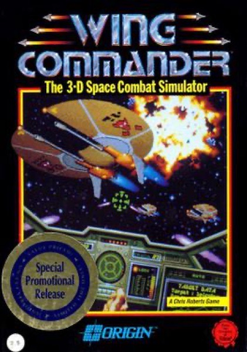

Simulation · 1990
Wing Commander
Cockpit dogfights, a branching campaign, and a crew that noticed when you failed.

Cover: Wikipedia: Wing Commander (video game)
Facts
- Released
- 1990-01-01
- Genre
- Space Sim
- Category
- Simulation
- Platforms
- Nintendo, PC, Retro home computer
- Developers
- Origin Systems
- Publishers
- Origin Systems